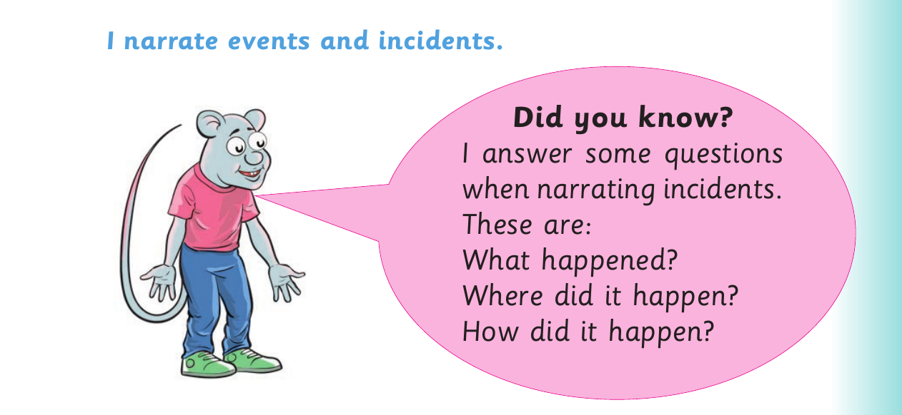
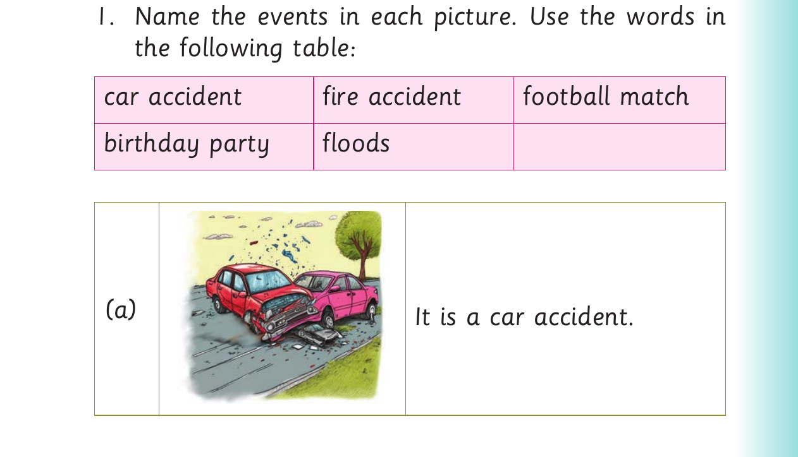

I narrate events and incidents

I narrate events and incidents. Did you know? I answer some questions when narrating incidents. These are: What happened? Where did it happen? How did it happen?
Activity 1

1. Name the events in each picture. Use the words in the following table: car accident fire accident football match birthday party floods (a) It is a car accident.